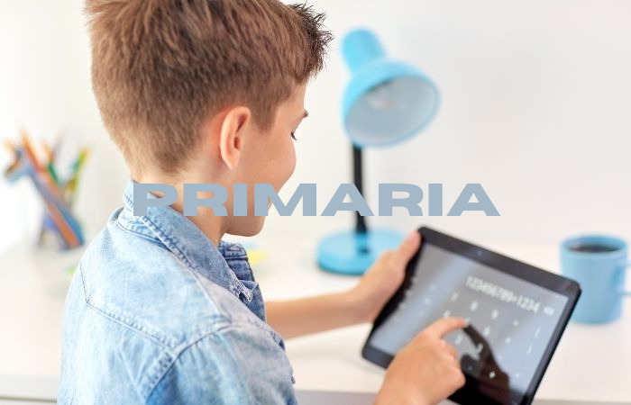

UNEMI PROGRAMMERS
Inicio
Ejercicios por Niveles
Sobre Nosotros
Contacto
Inicio
¡EMPEZEMOS! SELECCIONE UN NIVEL

Ejercicios por Niveles
Primaria
¿Qué número sigue en la secuencia 10, 20, 30, ...?
¿Cuál es el patrón en la secuencia 2, 4, 8, 16, ...?
¿Quién es mayor, Juan de 12 años o María de 14 años?
¿Quién es más joven, Pedro de 9 años o Laura de 7 años?
¿Qué tiene más superficie, una mesa de 1 m² o una alfombra de 2 m²?
¿Cuál es menor, un jardín de 10 m² o un balcón de 5 m²?
¿Qué recipiente puede contener más líquido, un vaso de 250 ml o una botella de 1 litro?
Secundaria
Pedir al usuario un número entero positivo y calcular la suma de todos los números naturales hasta ese número usando un bucle.
Pedir al usuario un número entero positivo y calcular su factorial usando un bucle.
Pedir al usuario dos números enteros y mostrar todos los números pares e impares en ese rango usando bucles.
Pedir al usuario un número entero y tipo d tabla y generar su tabla de multiplicar o sumar del 1 al 10 usando un bucle.
Pedir al usuario un número entero positivo y generar esa cantidad de números de la secuencia de Fibonacci usando un bucle.
Verificar números Primos
Verificar números Perfectos
Universidad
Crear una calculadora que realice operaciones básicas
Convertir un número binario a Hexadecimal y viceversa
Convertir un número binario a decimal y viceversa
Contar caracteres, vocales, signos, espacios, palabras y dígitos en un texto
Invertir una cadena de texto
Dado dos frases indicar cuál tiene más palabras
Dado un arreglo obtener los números primos
Dado un arreglo obtener los números perfectos
Dado un arreglo de notas obtener el promedio y la moda
Primaria
¿Qué número sigue en la secuencia 10, 20, 30, ...?
¿Cuál es el patrón en la secuencia 2, 4, 8, 16, ...?
¿Quién es mayor, Juan de 12 años o María de 14 años?
¿Quién es más joven, Pedro de 9 años o Laura de 7 años?
¿Qué tiene más superficie, una mesa de 1 m² o una alfombra de 2 m²?
¿Cuál es menor, un jardín de 10 m² o un balcón de 5 m²?
¿Qué recipiente puede contener más líquido, un vaso de 250 ml o una botella de 1 litro?
Secundaria
Pedir al usuario un número entero positivo y calcular la suma de todos los números naturales hasta ese número usando un bucle.
Pedir al usuario un número entero positivo y calcular su factorial usando un bucle.
Pedir al usuario dos números enteros y mostrar todos los números pares e impares en ese rango usando bucles.
Pedir al usuario un número entero y tipo d tabla y generar su tabla de multiplicar o sumar del 1 al 10 usando un bucle.
Pedir al usuario un número entero positivo y generar esa cantidad de números de la secuencia de Fibonacci usando un bucle.
Verificar números Primos
Verificar números Perfectos
Universidad
Crear una calculadora que realice operaciones básicas
Convertir un número binario a Hexadecimal y viceversa
Convertir un número binario a decimal y viceversa
Contar caracteres, vocales, signos, espacios, palabras y dígitos en un texto
Invertir una cadena de texto
Dado dos frases indicar cuál tiene más palabras
Dado un arreglo obtener los números primos
Dado un arreglo obtener los números perfectos
Dado un arreglo de notas obtener el promedio y la moda
Sobre Nosotros
Hecho por:
Jostin Alexander Ordoñez Andrade
Jhamilton Rodrigo Sagal Castro
Erick Skarlin Pacheco Calderon
Omar David Peñafiel Olaya
Livinton Vladimir Barrea Moncayo
Contacto
¡Dejanos saber tus preguntas y comentarios!
Nombre:
Correo Electrónico:
Mensaje:
Enviar
Síguenos